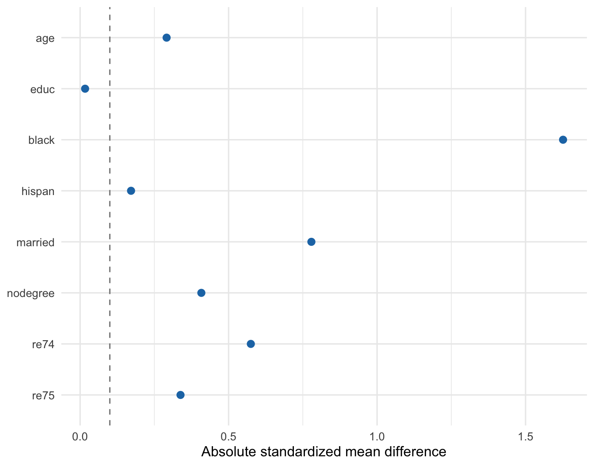
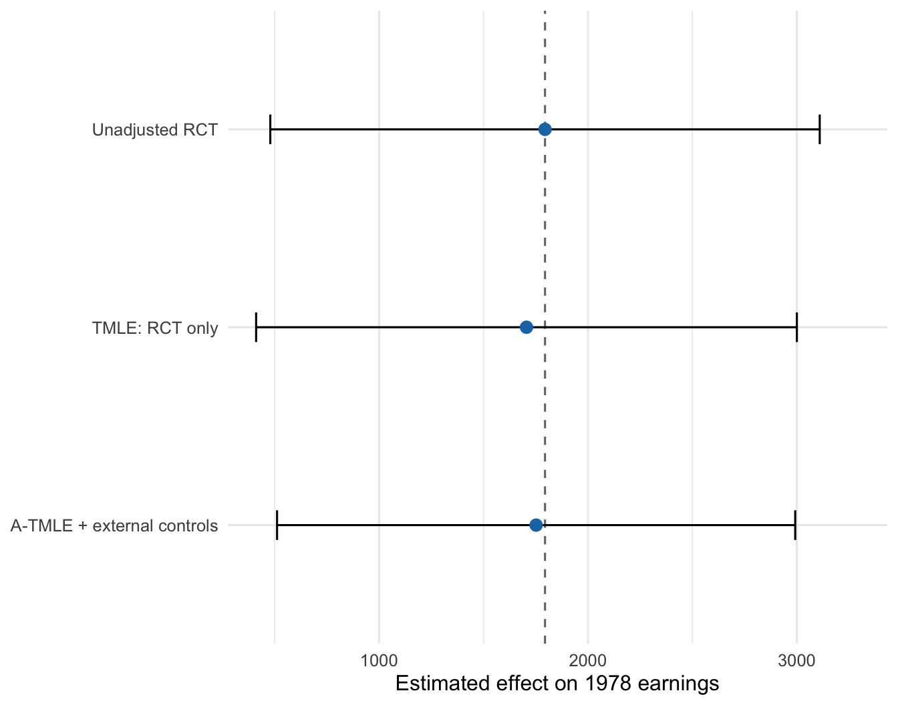

library(atmle)
library(ggplot2)
library(sl3)
library(tmle)
set.seed(20260716)Augmenting a Randomized Trial with External Controls: A LaLonde A-TMLE Tutorial
Overview
In Chapter 22, we discussed the Adaptive TMLE (A-TMLE) as a general approach to regularize the targeting step of a TMLE. In this tutorial, we look at a particular application of that general theoretical framework. Specifically, we discuss an estimator constructed based on A-TMLE that augments the randomized trial data with external arms to improve efficiency.
Randomized controlled trials (RCTs) provide internally valid treatment comparisons, but their precision is limited by the number of randomized participants. One possible way to improve precision is to supplement the randomized control arm with external controls. The difficulty is that external controls were not randomized and may differ from trial participants in both measured and unmeasured ways. Blindly pooling them with the randomized controls can therefore trade variance for substantial bias.
In this tutorial, we consider the National Supported Work (NSW) experiment analyzed by Lalonde (1986) and Dehejia & Wahba (1999). We retain both randomized NSW arms and consider augmenting the trial with CPS3, a nonexperimental control sample from the Current Population Survey (CPS). CPS3 contains unemployed men with low pre-program earnings, making it a plausible but still imperfect external comparison group for NSW participants.
We compare:
- the unadjusted randomized difference in mean earnings;
- a covariate-adjusted TMLE using only randomized participants;
- naive pooling of randomized and CPS3 controls;
- an A-TMLE data integration estimator that augments the randomized trial with CPS3 and corrects for any biases from pooling of the external controls.
Our goal is to explore and see whether an estimator based on A-TMLE can extract useful information from external controls to perform a favorable bias-variance trade-off and improve efficiency over trial-only estimators without inheriting the severe bias seen under naive pooling.
Why A-TMLE can help to improve efficiency
Let \(\mathcal{M}\) denote the prespecified statistical model and let \(\Psi(P_0)\) be the target parameter. A-TMLE learns a working model \(\mathcal{M}_n\) that approximates an oracle model \(\mathcal{M}_0\subseteq\mathcal{M}\) containing the true distribution \(P_0\). Rather than immediately targeting \(\Psi\) over the whole model, it targets the data-adaptive projection parameter
\[\Psi_{\mathcal{M}_n}(P)=\Psi\{\Pi_{\mathcal{M}_n}(P)\}.\]
Under the oracle-approximation, remainder, and stability conditions developed in the A-TMLE chapter and van der Laan et al. (2024), the resulting estimator has the expansion
\[\widehat\psi_{\mathrm{A\text{-}TMLE}}-\Psi(P_0) = (P_n-P_0)D_{\mathcal{M}_0,P_0}+o_P(n^{-1/2}),\]
because \(P_0\in\mathcal{M}_0\) implies \(\Psi_{\mathcal{M}_0}(P_0)=\Psi(P_0)\). Here, \(D_{\mathcal{M}_0,P_0}\) is the efficient influence function for the oracle projection parameter; with a likelihood or likelihood-behaving loss, it is also the efficient influence function obtained by acting as if the oracle model had been known in advance.
This leads to two useful regimes:
| Limiting oracle model | Asymptotic implication | Finite-sample interpretation |
|---|---|---|
| \(\mathcal{M}_0=\mathcal{M}\) | The influence function becomes the full-model efficient influence function, so the estimator is asymptotically regular and efficient in \(\mathcal{M}\). | A smaller working model \(\mathcal{M}_n\) may still regularize an unstable targeting step and trade a small projection or model-selection bias for lower variance. This can be favorable when the full-model influence function is highly variable or heavy-tailed. |
| \(\mathcal{M}_0\subsetneq\mathcal{M}\) | If the oracle-model efficiency bound is smaller, the A-TMLE can have asymptotic variance at \(P_0\) below the full-model efficiency bound. This super-efficiency is pointwise, as the estimator is regular for perturbations within the oracle model, but may have local asymptotic bias along nearby perturbations in the full model that leave the oracle model. | The estimator adapts to a simpler structure and can deliver a real precision gain. However, such super-efficiency necessarily gives up regularity for the original target along local perturbations that leave \(\mathcal{M}_0\). |
For many generic data-generating distributions, the learned models are expected to grow toward the full model, so that \(\mathcal{M}_0=\mathcal{M}\) is the ordinary limiting regime. The benefit therefore need not depend on a smaller oracle model, as finite-sample regularization may still improve the bias-variance trade-off. When \(\mathcal{M}_0\) is truly smaller, a real oracle efficiency gain is possible, but it exhibits pointwise super-efficiency rather than full-model regularity.
In some settings, it may be reasonable to trade a degree of regularity for improved efficiency. Regularity provides valuable robustness to local perturbations of the data-generating distribution, but that robustness may have limited practical value if every estimator that is regular over the full model is so variable that it has little power at the available sample size. A-TMLE provides a principled way to navigate this trade-off. By adapting to a data-driven working model, it can improve precision and power while retaining consistency, asymptotic linearity, and asymptotically valid pointwise inference under appropriate conditions.
Why this motivates RCT augmentation
Data integration is a natural application of A-TMLE because external outcome data create an explicit bias–variance trade-off. Incorporating these data may reduce variance by increasing the available information, but differences between the trial and external populations may also introduce bias. As discussed in Section 11 of Chapter 22 and in van der Laan et al. (2026), we may express the trial-population ATE as
\[\Psi_{\mathrm{RCT}}(P_0)=\widetilde\Psi(P_0)-\Psi^{\#}(P_0),\]
where \(\widetilde\Psi\) is a pooled-data treatment-effect component and \(\Psi^{\#}\) corrects the bias induced by differences between trial and external outcomes. In particular, the parameter \(\Psi^{\#}\) has an analytic form involving the conditional effect of trial enrollment on the outcome, give treatment and baseline covariates. We could then define an A-TMLE estimator that learns a working model for this conditional trial-enrollment effect.
If the trial-external discrepancy is absent or captured by a parsimonious function, the external outcomes can contribute substantial precision. As that discrepancy becomes more complex, the working model must become richer and the potential efficiency gain shrinks. In the nonparametric limit, the procedure approaches the protection offered by an efficient trial-only analysis. This adaptivity makes external-data augmentation interesting, as the method attempts to adaptively borrow according to learned compatibility rather than assuming exchangeability of the data sources.
Now, let’s look at an example of applying this A-TMLE estimator in practice.
Setup
The trial and external data
The Dehejia-Wahba data files are available from the NBER data archive. We use the NSW subset with 1974 earnings available, consisting of 185 randomized treated participants and 260 randomized controls. CPS3 contributes 429 additional untreated individuals.
The following code chunk downloads the randomized NSW arms and CPS3.
Show the data-download code
base_url <- "https://users.nber.org/~rdehejia/data/"
variable_names <- c(
"treat", "age", "educ", "black", "hispan",
"married", "nodegree", "re74", "re75", "re78"
)
W_nodes <- c("age", "educ", "black", "hispan",
"married", "nodegree", "re74", "re75")
A_node <- "treat"
Y_node <- "re78"
S_node <- "S"
read_lalonde_file <- function(file) {
data <- read.table(paste0(base_url, file))
names(data) <- variable_names
data
}
rct <- rbind(
read_lalonde_file("nswre74_treated.txt"),
read_lalonde_file("nswre74_control.txt")
)
rct$source <- "NSW randomized trial"
rct$S <- 1L
external <- read_lalonde_file("cps3_controls.txt")
external$source <- "CPS3"
external$S <- 0LVariable definitions
| Variable | Role | Definition |
|---|---|---|
S |
Data source | 1 for the randomized NSW trial; 0 for the external CPS data |
treat |
Treatment | 1 for assignment to NSW job training; 0 for no NSW training |
re78 |
Outcome | Real earnings recorded in 1978 |
age |
Baseline covariate | Age in years |
educ |
Baseline covariate | Years of education |
black, hispan |
Baseline covariates | Race/ethnicity indicators |
married |
Baseline covariate | Indicator for being married |
nodegree |
Baseline covariate | Indicator for not having a high-school degree |
re74, re75 |
Baseline covariates | Real earnings in 1974 and 1975 |
An earnings value of zero is a valid observed value, not a missing value: the individual had no recorded earnings in that year. The distributions of re74, re75, and re78 consequently have a point mass at zero and a long right tail.
The CPS3 external cohort
CPS3 contains 429 untreated, unemployed men whose 1975 income was below the poverty level. Its restriction to people with low recent earnings makes it more relevant to the NSW trial than an unrestricted population sample, but it does not make CPS3 exchangeable with the randomized controls. The NBER archive notes that the downloadable CPS3 file is a reconstruction that is similar, but not identical, to LaLonde’s original comparison sample.
Descriptive comparison
We first compare the randomized arms and CPS3 before fitting any estimator.
summarize_source <- function(data, label) {
data.frame(
Sample = label,
N = nrow(data),
`Age, mean` = mean(data$age),
`Black, %` = 100 * mean(data$black),
`Married, %` = 100 * mean(data$married),
`RE74, mean` = mean(data$re74),
`RE75, mean` = mean(data$re75),
`RE78, mean` = mean(data$re78),
`Zero RE78, %` = 100 * mean(data$re78 == 0),
check.names = FALSE
)
}
source_summary <- do.call(
rbind,
list(
summarize_source(rct[rct$treat == 1, ], "NSW randomized treatment"),
summarize_source(rct[rct$treat == 0, ], "NSW randomized control"),
summarize_source(external, "CPS3")
)
)
source_summary Sample N Age, mean Black, % Married, % RE74, mean
1 NSW randomized treatment 185 25.81622 84.32432 18.91892 2095.574
2 NSW randomized control 260 25.05385 82.69231 15.38462 2107.027
3 CPS3 429 28.03030 20.27972 51.28205 5619.237
RE75, mean RE78, mean Zero RE78, %
1 1532.055 6349.144 24.32432
2 1266.909 4554.801 35.38462
3 2466.484 6984.170 22.84382The CPS3 restriction produces a sample with low pre-program earnings, but it does not make the sources exchangeable. For example, the proportion Black and the marriage rate remain very different. This is the setting in which a data-integration estimator must distinguish useful outcome information from source-related bias.
We can summarize the measured source differences with standardized mean differences (SMDs), comparing CPS3 with all randomized participants.
source_smd <- function(external, source_name) {
smd <- vapply(W_nodes, function(variable) {
pooled_sd <- sqrt(
(stats::var(rct[[variable]]) + stats::var(external[[variable]])) / 2
)
if (pooled_sd == 0) return(0)
(mean(external[[variable]]) - mean(rct[[variable]])) / pooled_sd
}, numeric(1))
data.frame(
Source = source_name,
Variable = factor(names(smd), levels = rev(W_nodes)),
Absolute_SMD = abs(smd)
)
}
smd_data <- source_smd(external, "CPS3")
ggplot(smd_data, aes(x = Absolute_SMD, y = Variable)) +
geom_vline(xintercept = 0.1, linetype = 2, color = "grey55") +
geom_point(size = 2.5, color = "#1F77B4") +
labs(x = "Absolute standardized mean difference", y = NULL) +
theme_minimal(base_size = 12)
The conventional 0.1 SMD line is only a descriptive reference. Small measured differences would not establish conditional exchangeability. Here, the remaining imbalances reinforce that CPS3 should not simply be treated as an extension of the randomized control arm.
Target estimand
Let \(S=1\) identify randomized NSW participants, \(A\) denote randomized assignment, \(W\) denote the baseline covariates, and \(Y\) denote 1978 earnings. Our target is the average treatment effect in the randomized-trial population:
\[\psi_{\mathrm{RCT}} = E\{Y(1)-Y(0)\mid S=1\}.\]
This choice matters. The atmle implementation also reports an estimand averaged over the pooled trial-plus-external covariate distribution (the same estimand considered in van der Laan et al. (2026)). That is a different target. Throughout this tutorial, we retain only the output row labeled "Avg. over S=1", because it is directly comparable with the randomized benchmark.
Randomized-trial benchmarks
Unadjusted randomized estimator
Randomization identifies the trial-population effect without outcome modeling. The unadjusted estimator is the difference in mean 1978 earnings between the two randomized arms.
rct_treated <- rct[rct[[A_node]] == 1, ]
rct_control <- rct[rct[[A_node]] == 0, ]
unadjusted_psi <- mean(rct_treated[[Y_node]]) - mean(rct_control[[Y_node]])
unadjusted_se <- sqrt(
var(rct_treated[[Y_node]]) / nrow(rct_treated) +
var(rct_control[[Y_node]]) / nrow(rct_control)
)
unadjusted_ci <- unadjusted_psi + qnorm(c(0.025, 0.975)) * unadjusted_se
unadjusted_result <- data.frame(
Estimator = "Unadjusted RCT",
Estimate = unadjusted_psi,
SE = unadjusted_se,
Lower = unadjusted_ci[1],
Upper = unadjusted_ci[2]
)
unadjusted_result Estimator Estimate SE Lower Upper
1 Unadjusted RCT 1794.342 670.9965 479.2133 3109.471The unadjusted estimate is 1794. It can be used as a benchmark for evaluating whether external-data integration is pulling the analysis away from the randomized evidence.
Covariate-adjusted TMLE using only the RCT
Next, we fit a conventional TMLE using only the 445 randomized participants. Baseline adjustment can improve precision without relying on any external outcomes.
set.seed(20260716)
rct_tmle_fit <- tmle::tmle(
Y = rct[[Y_node]],
A = rct[[A_node]],
W = rct[W_nodes],
family = "gaussian",
Q.SL.library = c("SL.mean", "SL.glm", "SL.glmnet"),
g.SL.library = c("SL.mean", "SL.glm", "SL.glmnet"),
V.Q = 5,
V.g = 5
)
rct_tmle_result <- data.frame(
Estimator = "TMLE: RCT only",
Estimate = rct_tmle_fit$estimates$ATE$psi,
SE = sqrt(rct_tmle_fit$estimates$ATE$var.psi),
Lower = rct_tmle_fit$estimates$ATE$CI[1],
Upper = rct_tmle_fit$estimates$ATE$CI[2]
)
rbind(unadjusted_result, rct_tmle_result) Estimator Estimate SE Lower Upper
1 Unadjusted RCT 1794.342 670.9965 479.2133 3109.471
2 TMLE: RCT only 1705.750 660.4374 411.3168 3000.184The RCT-only TMLE remains close to the unadjusted randomized estimate but is more efficient due to covariate-adjustment. This gives us two trial-based reference points before any external outcomes enter the analysis.
What happens under naive pooling?
A tempting shortcut is to append the CPS controls to the randomized controls and then compare the randomized treated arm with this enlarged control group. This procedure does not account for source differences.
pooled_controls <- rbind(rct_control, external)
naive_pooling <- data.frame(
`External cohort` = "CPS3",
`External N` = nrow(external),
`External mean RE78` = mean(external$re78),
`Naively pooled estimate` =
mean(rct_treated$re78) - mean(pooled_controls$re78),
check.names = FALSE
)
naive_pooling External cohort External N External mean RE78 Naively pooled estimate
1 CPS3 429 6984.17 281.7167Even with a deliberately restricted external cohort, naive pooling pulls the estimate sharply away from the randomized benchmark. Additional controls are useful only if the analysis accounts adequately for differences between their outcome distribution and that of randomized controls.
A-TMLE data integration
Super Learner specification
For the nuisance regressions, we use a convex Super Learner combining penalized generalized linear models, multivariate adaptive regression splines, and Bayesian additive regression trees. The non-negative least-squares metalearner assigns non-negative weights that sum to one.
sl_library <- list(
learners = list(
glmnet = sl3::Lrnr_glmnet$new(),
earth = sl3::Lrnr_earth$new(),
dbarts = sl3::Lrnr_dbarts$new()
),
metalearner = sl3::Lrnr_nnls$new(convex = TRUE)
)Reusable fitting function
fit_atmle_source <- function(n_folds = 5L, seed = 20260716) {
data <- rbind(rct, external)
set.seed(seed)
fit <- atmle::atmle_ate_fusion$new(
data = data,
S_node = S_node,
W_nodes = W_nodes,
A_node = A_node,
Y_node = Y_node,
family = "gaussian",
n_folds = n_folds
)
fit$run(
g_bar_method = sl_library,
theta_method = sl_library,
Pi_method = sl_library,
Q_bar_method = sl_library,
A_cate_args = list(
max_degree = 3L,
smoothness_orders = 1L,
num_knots = 10L
),
S_cate_args = list(
max_degree = 3L,
smoothness_orders = 1L,
num_knots = 10L,
force_A = TRUE
),
verbose = FALSE
)
result <- fit$results[fit$results$param == "Avg. over S=1", ]
result$external_n <- sum(data[[S_node]] == 0)
result
}Fit the CPS3 analysis
The CPS3 sample is small enough that we fit the estimator directly when rendering the tutorial.
atmle_results <- fit_atmle_source()
stopifnot(nrow(atmle_results) == 1L)For the trial-population estimand, the implementation reports
\[\widehat\psi_{\text{A-TMLE}} = \widehat\psi_{\text{tilde}} - \widehat\psi_{\text{pound}},\]
where the second component adapts to estimated trial–external discrepancies. Examining both components helps distinguish a stable final estimate from accidental agreement caused by two unstable pieces.
atmle_components <- atmle_results[
,
c("external_n", "psi_tilde", "psi_pound", "psi")
]
names(atmle_components) <- c(
"External N", "Tilde component",
"Pound component", "A-TMLE estimate"
)
atmle_components External N Tilde component Pound component A-TMLE estimate
2 429 1537.649 -214.2002 1751.85Comparing all estimators
atmle_comparison <- data.frame(
Estimator = "A-TMLE + external controls",
Estimate = atmle_results$psi,
SE = atmle_results$se,
Lower = atmle_results$lower,
Upper = atmle_results$upper
)
comparison_results <- rbind(
unadjusted_result,
rct_tmle_result,
atmle_comparison
)
comparison_order <- c(
"Unadjusted RCT", "TMLE: RCT only",
"A-TMLE + external controls"
)
comparison_results <- comparison_results[
match(comparison_order, comparison_results$Estimator),
]
comparison_results$`SE ratio vs RCT TMLE` <-
comparison_results$SE / rct_tmle_result$SE
comparison_results Estimator Estimate SE Lower Upper
1 Unadjusted RCT 1794.342 670.9965 479.2133 3109.471
2 TMLE: RCT only 1705.750 660.4374 411.3168 3000.184
3 A-TMLE + external controls 1751.850 632.8323 511.5210 2992.178
SE ratio vs RCT TMLE
1 1.0159882
2 1.0000000
3 0.9582019plot_results <- comparison_results
plot_results$Estimator <- factor(
plot_results$Estimator,
levels = rev(comparison_order)
)
ggplot(plot_results, aes(x = Estimator, y = Estimate)) +
geom_hline(
yintercept = unadjusted_psi,
linetype = 2,
color = "grey45"
) +
geom_errorbar(aes(ymin = Lower, ymax = Upper), width = 0.15) +
geom_point(size = 2.8, color = "#1F77B4") +
coord_flip() +
scale_y_continuous(
expand = expansion(mult = c(0.05, 0.12))
) +
labs(x = NULL, y = "Estimated effect on 1978 earnings") +
theme_minimal(base_size = 12)
The CPS3 A-TMLE estimate is 1752. It differs from the unadjusted randomized estimate by only 42 and from the RCT-only TMLE by 46. Its 95% confidence interval contains the unadjusted randomized point estimate. In contrast, naive pooling with the same CPS3 controls gives 282, illustrating why agreement cannot be achieved simply by appending external observations.
The estimated standard error decreases from 660 for the RCT-only TMLE to 633 for A-TMLE with CPS3, a reduction of about 4.2%. In this analysis, A-TMLE therefore preserves the randomized-trial point estimate while producing a modest estimated precision gain. Although this gain seems small, it may be consequential when a scientific conclusion depends on whether a confidence interval crosses a decision threshold. For example, after establishing noninferiority in a randomized trial, even a modest precision gain from external-control augmentation could help determine whether the evidence also supports treatment superiority.
Scope of the demonstration
The LaLonde data are useful because they provide a randomized benchmark together with a nonexperimental comparison sample measured on common variables. This tutorial focuses on augmentation with external controls because that is the setting we aim to illustrate and is common in, for example, pharmaceutical applications; it is not a limitation of the A-TMLE framework, which can also incorporate external treatment arms. Differences between NSW and CPS—including differences in eligibility, study setting, and outcome-measurement procedures—are precisely the types of source discrepancies that the overall bias function \(\Psi^{\#}\) is intended to capture. Rather than assuming that the trial and external outcomes are exchangeable, A-TMLE learns a working model for their conditional differences and estimates the corresponding bias correction. Finally, as in any real-data analysis, the true treatment effect is unknown. Nevertheless, under the randomized design, the unadjusted difference in means is an unbiased estimator of the trial treatment effect and therefore provides the best available empirical benchmark outside a simulation setting. For a full evaluation of A-TMLE, this real-data tutorial should be paired with simulations in which compatibility, overlap, and the true treatment effect can be controlled directly.
Reproducibility information
Show package versions
sessionInfo()R version 4.5.2 (2025-10-31)
Platform: aarch64-apple-darwin20
Running under: macOS Tahoe 26.2
Matrix products: default
BLAS: /System/Library/Frameworks/Accelerate.framework/Versions/A/Frameworks/vecLib.framework/Versions/A/libBLAS.dylib
LAPACK: /Library/Frameworks/R.framework/Versions/4.5-arm64/Resources/lib/libRlapack.dylib; LAPACK version 3.12.1
locale:
[1] C.UTF-8/C.UTF-8/C.UTF-8/C/C.UTF-8/C.UTF-8
time zone: America/Los_Angeles
tzcode source: internal
attached base packages:
[1] splines stats graphics grDevices utils datasets methods
[8] base
other attached packages:
[1] tmle_2.1.1 SuperLearner_2.0-40 gam_1.22-7
[4] foreach_1.5.2 nnls_1.6 glmnet_5.0
[7] Matrix_1.7-4 sl3_1.4.5 ggplot2_4.0.3
[10] atmle_0.1.1
loaded via a namespace (and not attached):
[1] Rdpack_2.6.4 delayed_0.5.0 pROC_1.19.0.1
[4] rlang_1.3.0 magrittr_2.0.4 otel_0.2.0
[7] compiler_4.5.2 vctrs_0.7.3 reshape2_1.4.5
[10] stringr_1.6.0 pkgconfig_2.0.3 shape_1.4.6.1
[13] crayon_1.5.3 fastmap_1.2.0 backports_1.5.0
[16] labeling_0.4.3 rmarkdown_2.30 prodlim_2025.04.28
[19] purrr_1.2.0 xfun_0.55 WeightedROC_2020.1.31
[22] jsonlite_2.0.0 progress_1.2.3 recipes_1.3.1
[25] uuid_1.2-1 parallel_4.5.2 prettyunits_1.2.0
[28] R6_2.6.1 stringi_1.8.7 RColorBrewer_1.1-3
[31] parallelly_1.46.0 rpart_4.1.24 lubridate_1.9.4
[34] Rcpp_1.1.1 assertthat_0.2.1 iterators_1.0.14
[37] hal9001_0.4.6 knitr_1.51 future.apply_1.20.1
[40] R.utils_2.13.0 nnet_7.3-20 igraph_2.2.1
[43] timechange_0.3.0 tidyselect_1.2.1 abind_1.4-8
[46] yaml_2.3.12 timeDate_4051.111 codetools_0.2-20
[49] listenv_0.10.0 lattice_0.22-7 tibble_3.3.0
[52] plyr_1.8.9 withr_3.0.2 S7_0.2.1
[55] ROCR_1.0-11 evaluate_1.0.5 future_1.68.0
[58] survival_3.8-3 pillar_1.11.1 checkmate_2.3.3
[61] stats4_4.5.2 generics_0.1.4 hms_1.1.4
[64] scales_1.4.0 origami_1.0.7 plotmo_3.7.0
[67] globals_0.18.0 class_7.3-23 glue_1.8.0
[70] tools_4.5.2 data.table_1.18.0 ModelMetrics_1.2.2.2
[73] rstackdeque_1.1.1 gower_1.0.2 dbarts_0.9-33
[76] visNetwork_2.1.4 grid_4.5.2 plotrix_3.8-13
[79] rbibutils_2.4 ipred_0.9-15 nlme_3.1-168
[82] BBmisc_1.13 earth_5.3.5 Formula_1.2-5
[85] cli_3.6.5 lava_1.8.2 dplyr_1.2.1
[88] gtable_0.3.6 R.methodsS3_1.8.2 digest_0.6.39
[91] caret_7.0-1 htmlwidgets_1.6.4 farver_2.1.2
[94] htmltools_0.5.9 R.oo_1.27.1 lifecycle_1.0.5
[97] hardhat_1.4.2 MASS_7.3-65